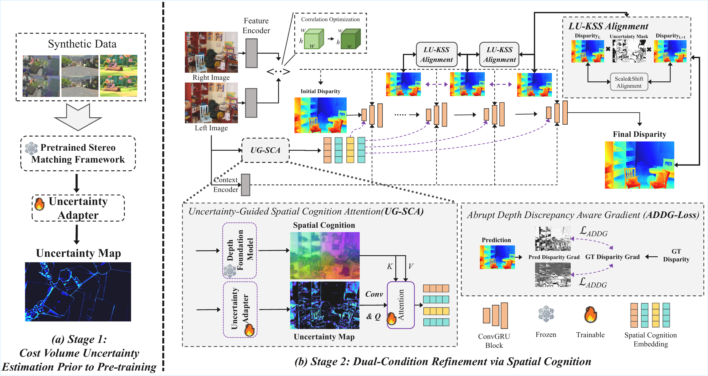
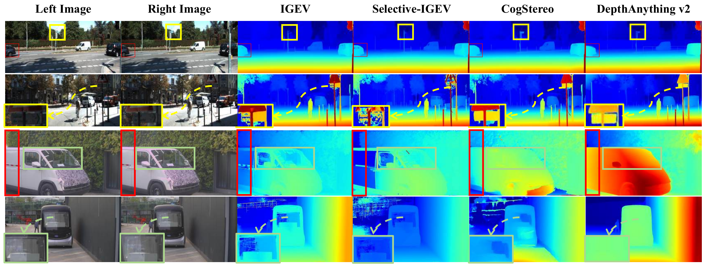
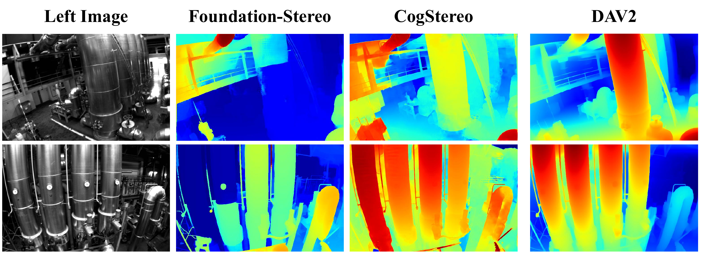
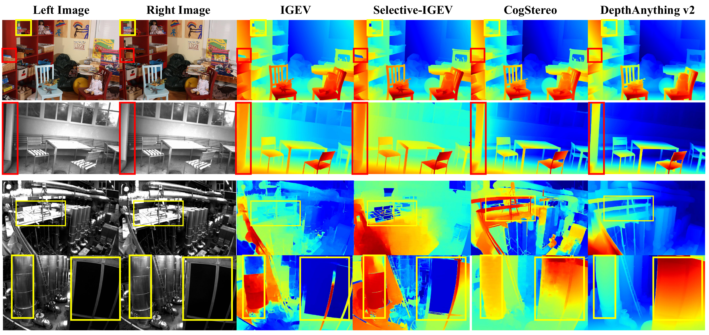
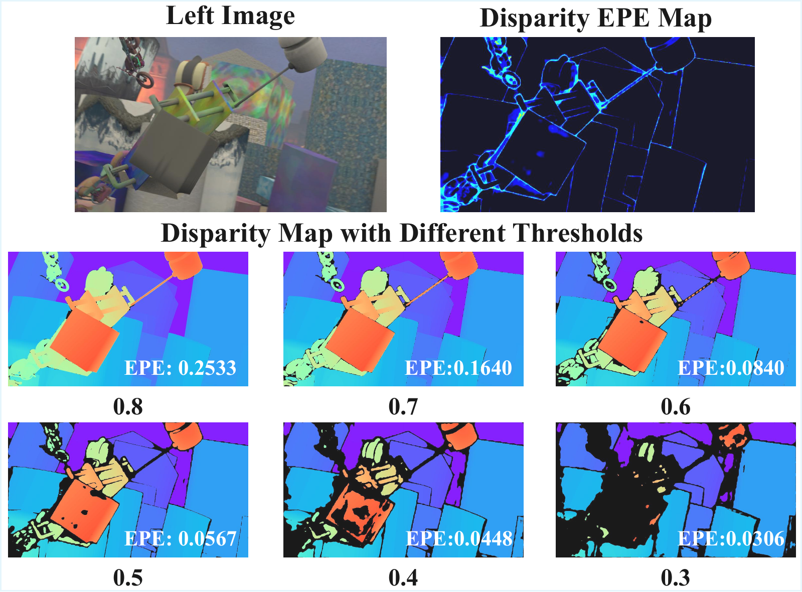

Abstract
Deep stereo matching has advanced significantly on benchmark datasets through fine-tuning but falls short of the zero-shot generalization seen in foundation models in other vision tasks. We introduce CogStereo, a framework that addresses challenging regions such as occlusions and weak textures without relying on dataset-specific priors. CogStereo embeds implicit spatial cognition into the refinement process by using monocular depth features as priors, capturing holistic scene understanding beyond local correspondences. A dual-conditional refinement mechanism combines pixel-wise uncertainty with cognition-guided features for consistent global correction. Experiments on Scene Flow, KITTI, Middlebury, ETH3D, EuRoC, and real-world driving scenes demonstrate state-of-the-art accuracy and cross-domain generalization.
Video
ICRA 2026 supplementary video — zero-shot stereo matching and qualitative comparisons.
Method Overview
CogStereo operates in two stages: (1) cost-volume uncertainty pre-training with an Uncertainty Adapter, and (2) dual-condition refinement via UG-SCA, combining pixel uncertainty with DAv2 spatial cognition. LU-KSS alignment and ADDG-Loss further stabilize metric accuracy.
Uncertainty Prior
Jointly predict log-variance and disparity at the cost-volume stage to identify unreliable regions early.
UG-SCA Refinement
Uncertainty-conditioned attention over DAv2 features propagates reliable structure into ambiguous areas.
LU-KSS + ADDG
KNN scale-shift alignment anchors low-uncertainty pixels; ADDG penalizes abrupt depth changes.

Results
Zero-Shot Qualitative Comparison

EuRoC Zero-Shot Generalization

Multi-Benchmark Comparison

Uncertainty-Guided Refinement

Zero-Shot Quantitative Comparison
All methods trained exclusively on Scene Flow. Lower is better. Best · Second best
| Method | Middlebury BP-2 ↓ | ETH3D BP-1 ↓ | KITTI-12 D1 ↓ | KITTI-15 D1 ↓ | ||||||||
|---|---|---|---|---|---|---|---|---|---|---|---|---|
| NOC | OCC | ALL | NOC | OCC | ALL | NOC | OCC | ALL | NOC | OCC | ALL | |
| ACVNet | 22.1 | 47.4 | 25.7 | 8.7 | 19.6 | 9.2 | 12.9 | 54.5 | 13.9 | 11.3 | 32.9 | 11.7 |
| Mask-CFNet | — | — | 13.7 | — | — | 5.7 | — | — | 4.8 | — | — | 5.8 |
| RAFT-Stereo | 9.1 | 28.0 | 12.0 | 2.9 | 6.0 | 3.0 | 4.3 | 28.4 | 4.7 | 5.3 | 12.7 | 5.5 |
| PCW-Net | 12.2 | 38.0 | 15.9 | 5.3 | 11.7 | 5.5 | 4.1 | 30.2 | 4.7 | 5.5 | 15.0 | 5.7 |
| CREStereo++ | — | — | 14.8 | — | — | 4.4 | — | — | 4.7 | — | — | 5.2 |
| IGEV | 7.3 | 24.3 | 9.9 | 4.1 | 9.8 | 4.4 | 4.9 | 33.7 | 5.6 | 5.6 | 14.3 | 5.8 |
| IGEV++ | — | — | 7.8 | — | — | 4.1 | — | — | 5.1 | — | — | 5.9 |
| NMRF-Stereo | — | — | 7.5 | — | — | 3.8 | — | — | 4.2 | — | — | 5.1 |
| Selective-IGEV | 6.7 | 22.6 | 9.2 | 4.1 | 9.8 | 4.4 | 5.1 | 31.9 | 5.7 | 5.7 | 13.8 | 5.9 |
| FoundationStereo* | — | — | 5.5 | — | — | 1.8 | — | — | 3.2 | — | — | 4.9 |
| DEFOMStereo-L* | 4.4 | 20.6 | 6.9 | 2.1 | 5.1 | 2.2 | 3.8 | 22.0 | 4.2 | 4.8 | 12.6 | 5.0 |
| CogStereo (Ours) | 4.2 | 10.0 | 5.1 | 1.5 | 4.0 | 1.6 | 2.7 | 16.3 | 3.0 | 4.2 | 9.1 | 4.3 |
* Methods utilizing Depth Anything.
Ablation Study (Scene Flow)
| Configuration | EPE ↓ |
|---|---|
| IGEV baseline | 0.47 |
| w/o UG-SCA | 0.44 |
| w/o DAv2 (SC features) | 0.46 |
| w/o LU-KSS | 0.49 |
| w/o ADDG-Loss | 0.36 |
| Full CogStereo | 0.35 |
Each module contributes to the final performance; removing LU-KSS causes metric drift (EPE 0.49 > baseline).
Acknowledgements
We thank the authors of IGEV, RAFT-Stereo, and Depth Anything v2 for their open-source implementations and pretrained models.
BibTeX
@inproceedings{fang2026cogstereo,
title = {CogStereo: Neural Stereo Matching with Implicit Spatial Cognition Embedding},
author = {Fang, Lihuang and Hu, Xiao and Zou, Yuchen and Zhang, Hong},
booktitle = {IEEE International Conference on Robotics and Automation (ICRA)},
year = {2026}
}